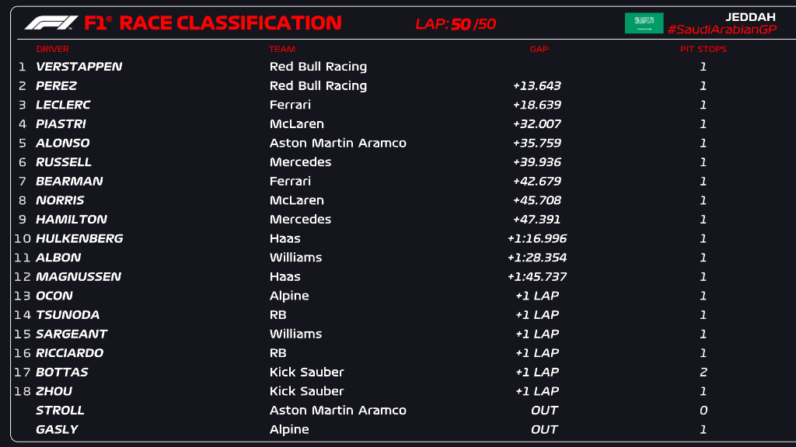
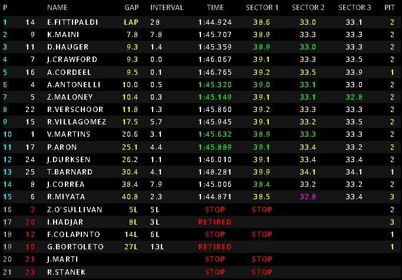

Verstappen domina, Checo aguanta y Bearman puntua
Oliver Bearman hace sus primeros puntos en la F1 en su debut con Ferrari mientras Alonso hacia vueltas a ritmo de qualy para mantener a los Mercedes. Bearman queda 7 por delante de Hamilton y Norris en su debut con Ferrar sustituyendo a Sainz.
Pepe Martí queda fuera de la carrera en la primera vuelta, Hadjar vuelve a abandonar por problemas técnicos igual que en la Sprint y Fittipaldi gana la carrera mientras un impresonante "three wide" ocurre a sus espaldas con Hauger como 3 complentando el podio después de un exterior y un "lazito" en la ultima curva.
